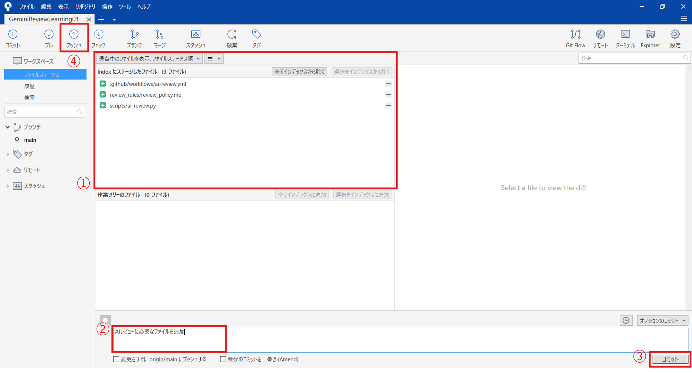
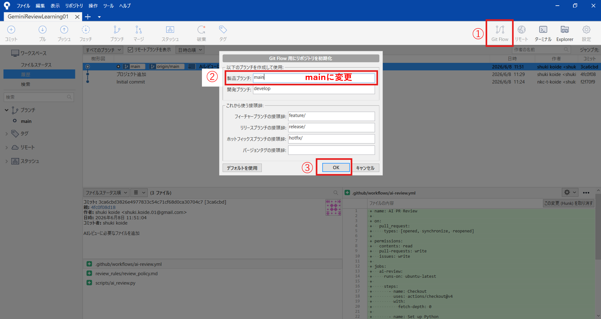
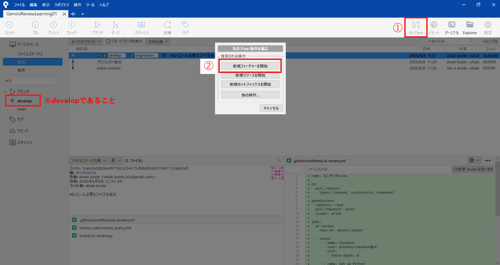
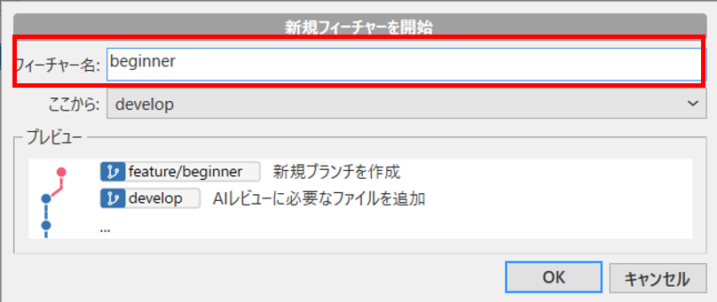
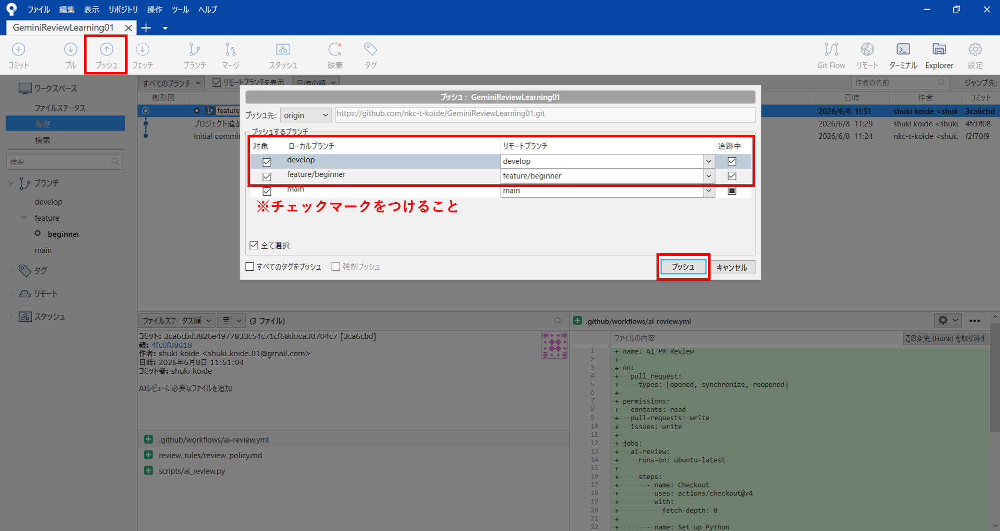
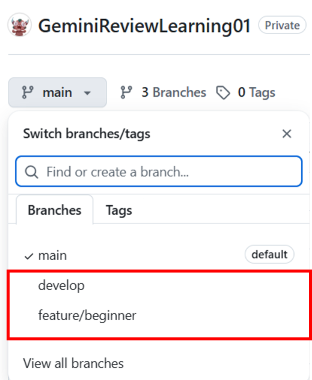

Git Flowでレビュー用ブランチを作る
AIレビューを動かすためのファイルをmainブランチに用意し、SourceTreeのGit Flowでdevelopとfeatureブランチを作成します。
mainブランチにAIレビュー用ファイルを用意する
まず、AIレビューを動かすために必要な3つのファイルをmainブランチにコミットします。
.github/workflows/ai-review.ymlGitHub Actionsの設定ファイルです。scripts/ai_review.pyGemini APIを呼び出すAIレビュー処理です。review_rules/review_policy.mdAIに渡すレビュー条件です。この3つは、AIレビューを実行するための土台です。ymlはGitHub Actionsの設定、pyはAIレビュー処理、mdはレビュー条件を表します。
repo/
├─ .github/
│ └─ workflows/
│ └─ ai-review.yml
├─ scripts/
│ └─ ai_review.py
└─ review_rules/
└─ review_policy.mdAIレビュー用ファイルをコミットしてpushする
.github/workflows/ai-review.yml、scripts/ai_review.py、review_rules/review_policy.md をステージに追加し、コミットしてからpushします。
この3つのファイルが、以降のdevelopブランチやfeatureブランチにも引き継がれます。

AIレビューに必要な yml / py / md ファイルをSourceTreeでコミットし、mainブランチへpushする画面です。
AIレビューを動かすためのファイルは、先にmainブランチへコミットしておきます。その後にGit Flowでdevelopやfeatureブランチを作成すると、これらのファイルを引き継いだ状態で作業できます。
SourceTreeでGit Flowを開始する
SourceTreeのGit Flow機能を使って、mainブランチからdevelopブランチを作成します。
- SourceTreeでリポジトリを開く
- Git Flowを初期化する
- developブランチが作成される
- 以後の開発はdevelopを起点に行う
Git Flowを初期化する
SourceTree右上の Git Flow を押し、Git Flowを初期化します。
製品ブランチは main、開発ブランチは develop に設定します。
設定できたら OK を押します。
master になっている場合は、main に変更してください。
SourceTreeのGit Flow初期化画面です。製品ブランチをmain、開発ブランチをdevelopにしてOKを押します。
フィーチャーブランチを作成する
developブランチから、レビュー実験用のフィーチャーブランチを作成します。今回は初心者向けレビュー条件を試すために、feature/beginner_review_test を作成します。
feature/beginner_review_testfeature/ が付いたブランチが作成されます。たとえば beginner_review_test と入力すると、feature/beginner_review_test が作成されます。このfeatureブランチで、AIレビュー対象になるシューティングゲームのコードを作成します。
新規フィーチャーを開始する
developブランチを選択していることを確認し、SourceTree右上の Git Flow を押します。
表示されたメニューから「新規フィーチャーを開始」を選択します。

featureブランチ名を入力する
フィーチャー名に beginner と入力します。
SourceTreeでは、接頭辞 feature/ が付くため、作成されるブランチ名は feature/beginner になります。
feature/beginner_review_test を使う場合は、フィーチャー名に beginner_review_test と入力してください。
作成したブランチをpushして確認する
ローカルで作成した develop ブランチと feature/beginner_review_test ブランチを、GitHub上にもpushします。push後、GitHubのブランチ一覧に develop と feature/beginner_review_test が表示されていれば成功です。
developとfeatureブランチをpushする
SourceTreeの「プッシュ」を押し、develop と feature/beginner_review_test にチェックを入れてpushします。
リモートブランチとしてGitHubに登録されるよう、追跡のチェックも確認します。
develop と feature/beginner_review_test にチェックが入っていることを確認してからpushします。mainはすでにpush済みの場合、無理に再pushする必要はありません。

developとfeatureブランチにチェックを入れ、GitHubへpushします。
GitHub上にブランチが作られたか確認する
GitHubのブランチ切り替えメニューを開き、develop と feature/beginner_review_test が表示されているか確認します。
表示されていれば、SourceTreeからGitHubへのpushは成功です。

GitHub上にdevelopとfeatureブランチが表示されていれば成功です。
featureブランチでシューティングゲームを作成する
feature/beginner_review_test ブランチ上で、DxLibを使った軽いシューティングゲームを作成します。
この教材では、AIレビューの違いを確認するために、あえて命名規則違反や危険な実装を含むコードを作成します。ただし、実際の授業では、どの問題をAIが指摘するかを確認することが目的です。
ここで作成するコードには、AIレビューを試すために意図的な問題を含めます。実際の開発では、危険なポインタ処理や重複処理をそのままにしないようにしましょう。
ここまでのブランチ構成
STEP7の最後では、以下のようなブランチ構成になります。
main
└─ develop
└─ feature/beginner_review_test